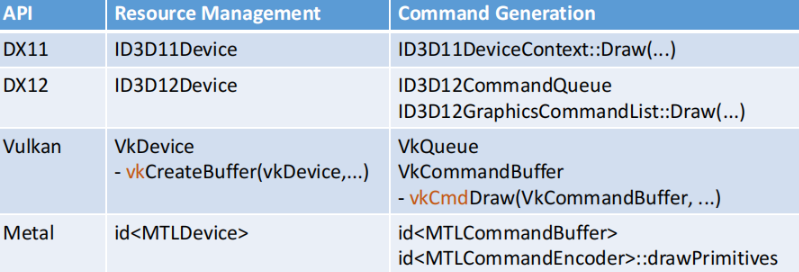
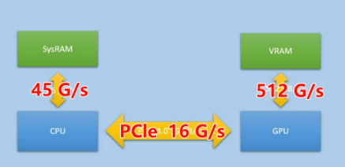

推荐阅读：
概要
为什么需要图形API？
- 暴露图形硬件的功能（GPU），并抽象出高->低维度的接口
- 用作 realtime rendering
图形API发展历史：（主要是15年左右诞生 Metal、DX12、Vulkan）

现代图形API的发展方向：
- 降低 CPU 性能瓶颈
- 多线程
- 优越的开发能力
从 High-Level -> Low-Level 角度来看：
- High-Level：意味着封装层次更高，性能较差
- Low-Level：以为这封装较低，学习成本陡峭
整个完整的图形引擎调用栈：
图形API vs GPU
- 图形API = Resource Manager + Commnad Producer
- GPU = Commnad Consumer + Execute async
从 生产者消费者模型 理解：
- 图形API：从CPU端 创建资源 + 产生一系列 DrawCalls
- GPU：指令的消耗 和 异步执行。
GPU = Async Execute Engine 一个异步执行的引擎
CPU 永远领先 GPU 1~3 帧
Single Commnad
一个基本的 CPU 渲染指令，应该包含如下要素：
- Command ID
- 操作数（注意有大小限制，后面会说）
- CPU地址（GPU可访问的）
- GPU地址
问题
- 如何向 Commnad 传递一波数据?
- Method 1：直接传递操作数
(<64 Bytes)，一般只有特定的API支持这么做，例如vkCmdPushConstants - Method 2：拷贝到显存（GPU可访问的），然后传地址进去。注意避免 CPU写 + GPU读 的情形发生
- Method 3：在Method 2的基础上，通过
Blit将数据拷到 GPU内存，然后传GPU地址- 如果
Blit一次，但是Read多次，那么收益比较高
- 如果
API结构
前面说过，图形API分为两大类：Resource Manager + Command Producer：
以具体的API为例：

API 一帧的调用
- Create Resource
- Texture / VertexBuffer / IndexBuffer …
- Set RenderPass
- Set PipelineState
- Shader / BlendState / DepthState
- Bind Shader Resources
- Uniform / Buffer …
- DrawCall
- Present
1. Resources
第一步是资源管理，对应 Create Resources 的部分。根据资源的类型还可以细分如下：
Resource Memory
上图框出来的部分，需要注意**内存的开销j（ Buffer、Image）。对于图形API中的内存分配方式，一共分为两种：
- 自动分配：DX11/OpenGL/Metal
- 手动分配：DX12/Vulkan/Metal
对于手动分配的方式，有一个好处是 resouce aliasing，多个资源可以共用一块内存（真节省呀！），参考阅读：
- Vulkan Memory Allocator: Resource aliasing (overlap)
- Direct3D 12 Memory Allocator: Resource aliasing (overlap)
内存架构
对于PC端，CPU 和 GPU 都有独立的内存，有如下特点：
- GPU 内存传输快于 CPU （主要是带宽高，数据bus设计原因）
- GPU/CPU 之间传输很慢

对于移动端，CPU 和 GPU 共用一张内存，有如下特点：
- 考虑到低功耗（带宽变小），内存传输非常慢
- GPU 部分有
Tiled Memory的架构优化
Memory Types
图形API中有不同的内存类型，区分如下：
Default：默认是 GPU 内存，不支持 CPU访问- 大多数资源的选择：buffers、textures、rt
Dynamic：指 CPU只写、GPU只读 的内存- 需要CPU每帧更新的资源（ todo：举个栗子）
Readback：指 CPU只读、GPU只写 的内存（使用情况比较少）Memoryless：适用于 TBR 架构
2. Render Pass
对于 Render Pass 的定义：不切换 FrameBuffer 的连续 Drawcalls。
Render Pass 的性能需要关注两个操作：
Load Action：注意 DontCare/Clear 是没有带宽开销的，只有 Load 需要注意Store Action：将 FrameBuffer 写回到 主存，开销大头
3. Pipeline State
通俗说 Pipeline State 作用是控制渲染状态，现代API通常将所有状态打包为一个大的 PSO （Pipeline State Object）。
如下是 DX11 的示例，需要手动设置 Shaders、Blend、DS、Raster 等所有状态。
Shader Compilation
-
- 将 shader source 编译成 跨平台的 bytecode/glsl
-
- 将 bytecode/glsl 编译成 machine code（ISA）
-
- Patch the Shader (Todo)：例如为 Binning Pass 产生仅包含 pos 的 vertex buffer
重要点
- Pipeline State 创建非常慢
- Shader 直到 Pipeline State 创建完，才能明确所有属性
- 尽可能早地创建
PSO
4. Shader Resource Binding
这阶段是为了给 shader 设置参数，以 DX11 为例：
- 每帧重复设置
- 逐个参数设置
反思一下，DX11 的设置方式太落后了，作为现代API，可以分配一块GPU内存专门用于 shader 参数传递（核心思想是 cache）：
5. Draw Calls
核心是如下三个参数：
- Indexed：需要绘制的 vertex、index 的 下标
- Instanced：一个 drawcall 绘制多个物体，CPU端 需要 buffer 存储不同的信息（如 vertex，pos）
- Indirect：
GPU-driven rendering，同样是一个 drawcall 绘制多个物体，区别于前者地方在于，是 GPU端 填充 buffer 信息
6. Swapchain
Swapchain 会持有如下资源，呈现最终的画面（Presentation）需要如下步骤：
- 从 Swanchain 取一张 image
- rendering 整个渲染流程
- 设置到 composition（因为有多个窗口）
TODO
- SwapChain、Presentation 这几个部分没听懂
优化
应该同时对 GPU、CPU 进行 Profile，如果不是性能瓶颈，请不要 过度优化。
基本的优化手段：
- 降低 DrawCalls：Instanced、Indirect
- 规划绘制顺序：eg. 通过 state、distance 等排序
- 降低 带宽：合图、mipmap …